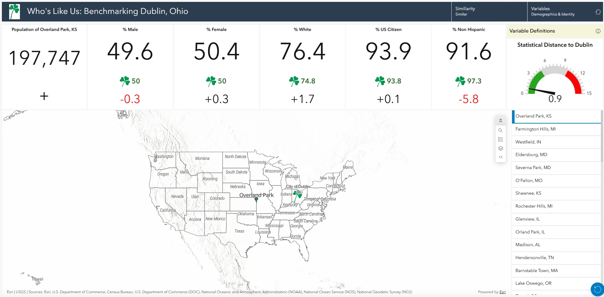

Graduate capstone
Data-Driven Dublin: finding the places most like Dublin, Ohio
A four-person capstone for my M.S. at Ohio State. We started with almost 2,400 U.S. places, kept the ones with reliable Census data, and used k-means clustering to find the 51 places most like Dublin, Ohio.

Open the live dashboardFrom 2,399 places to 51
Each step kept only the places we could trust or that looked most like Dublin. The bars are drawn to scale.
U.S. places in the Census Bureau's 2022 American Community Survey supplemental estimates.
Places with reliable estimates on all 19 measures we chose. This step is told in our StoryMap.
Places in Dublin's group in our final k-means model, ranked by how close each one is to Dublin.
The project in brief
The question
Our dashboard's title asks it: who is like us? A city can learn a lot by comparing itself with peer places that have similar people, jobs, and homes. We set out to find the U.S. places most like Dublin, Ohio, using public data and methods that others could repeat.
What we did
- Built a pipeline with GitHub Actions that pulls Census data from the Census API into a SQLite database.
- Chose 19 measures and kept places where every measure had a coefficient of variation under 15.
- Ran k-means in Python, first on raw counts and then on percentages, using elbow and silhouette charts to choose how many groups to make.
- Built a final model that added park, climate, and housing cost data, then shared the results in a StoryMap and a dashboard.
What we found
Our first round of k-means put Dublin in a group of 92 places, and most of them were in the South and the West. The final model's 51 places sit much closer to home: 29 are in the Midwest, including 4 in Ohio. The closest match is Overland Park, Kansas.
Where the matches are
Our final model, which added park, climate, and housing cost data, found a very different set of places. Here is Dublin's group by Census region in each round.
The 51 places most like Dublin
- 1Overland Park, KS0.91Midwest
- 2Farmington Hills, MI1.38Midwest
- 3Westfield, IN1.86Midwest
- 4Eldersburg, MD1.97South
- 5Severna Park, MD1.98South
- 6O'Fallon, MO2.00Midwest
- 7Shawnee, KS2.14Midwest
- 8Rochester Hills, MI2.15Midwest
- 9Glenview, IL2.18Midwest
- 10Orland Park, IL2.50Midwest
- 11Madison, AL2.54South
- 12Hendersonville, TN2.59South
- 13Barnstable Town, MA2.63Northeast
- 14Lake Oswego, OR2.63West
- 15Tigard, OR2.66West
- 16Tuckahoe, VA2.67South
- 17Franklin, TN2.68South
- 18Mount Pleasant, SC2.70South
- 19Smyrna, GA2.71South
- 20Roswell, GA2.85South
- 21Livonia, MI2.92Midwest
- 22O'Fallon, IL2.93Midwest
- 23Franklin, WI2.95Midwest
- 24White Plains, NY3.00Northeast
- 25Hoover, AL3.11South
- 26Sicklerville, NJ3.11Northeast
- 27West Des Moines, IA3.12Midwest
- 28Lenexa, KS3.19Midwest
- 29Catonsville, MD3.19South
- 30Lee's Summit, MO3.30Midwest
- 31Shoreview, MN3.33Midwest
- 32Chesterfield, MO3.51Midwest
- 33Keller, TX3.51South
- 34Noblesville, IN3.52Midwest
- 35Bettendorf, IA3.64Midwest
- 36New Berlin, WI3.65Midwest
- 37Warwick, RI3.68Northeast
- 38Beavercreek, OH3.74Midwest
- 39Strongsville, OH3.78Midwest
- 40Midland, MI3.81Midwest
- 41Apple Valley, MN3.87Midwest
- 42Christiansburg, VA3.92South
- 43Broken Arrow, OK3.93South
- 44Georgetown, TX4.03South
- 45Saint Charles, MO4.05Midwest
- 46Carmel, IN4.08Midwest
- 47Cranston, RI4.12Northeast
- 48Portage, MI4.26Midwest
- 49Kettering, OH4.40Midwest
- 50Springfield, IL4.57Midwest
- 51Parma, OH4.93Midwest
Statistical distance to Dublin from our final model. A smaller number means a place is more like Dublin. Dublin itself is 0.
See how we built it
Read our code on this site, browse the full project on GitHub, or follow the story of the data.
Read the k-means notebook
Our Python notebook from the first round of clustering, with every line of code and every output.
Read the notebook GitHubBrowse the code and data
The GitHub Actions pipeline, the SQLite database, the data dictionaries, and our Python and R scripts.
View on GitHub ArcGIS StoryMapRead the story of the data
How we gathered the Census data, chose the 19 measures, and narrowed 2,399 places to 564 with reliable estimates.
Read the StoryMapCredits and sources
Team
Jimmy Dwyer, Robert Butts, Nate Sepeda, and Indi Malam Ngoudo Dagoul, for our capstone in the M.S. in Translational Data Analytics at The Ohio State University.
Census data
U.S. Census Bureau, 2022 American Community Survey 1-year supplemental estimates, pulled through the Census API. Our final model also used park, climate, and housing cost data.
Map
The basemap in the dashboard screenshot is from Esri, with sources including the USGS, NOAA, and the U.S. Census Bureau.